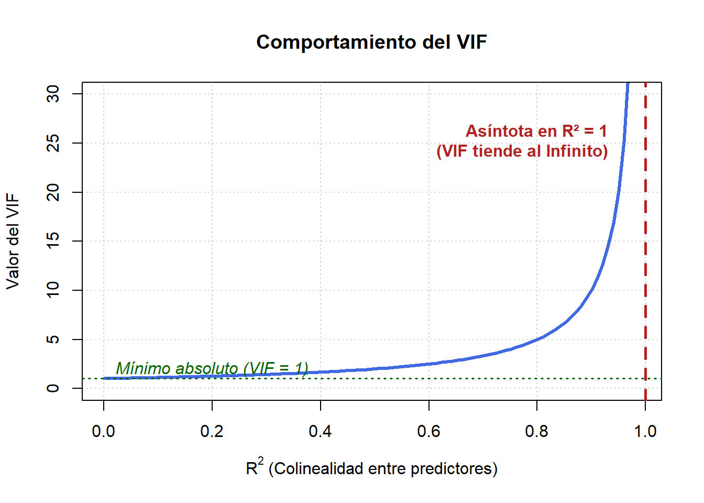

1 Regresión Lineal Simple
1.1 Definición
Un modelo de Regresión Lineal Simple es aquel modelo en donde nosotros deseamos observar el impacto que tiene una variable independiente (o regresor) \(X\) en nuestra variable dependiente (o regresada) \(Y\). De manera poblacional, el un modelo de regresión lineal simple se construye de la siguiente manera:
\[ Y = \beta_0 + \beta_1X + \varepsilon \]
Donde tendremos a \(\beta_0\) como intercepto, \(\beta_1\) como la pendiente de esta recta y por último un término de error \(\varepsilon\) que interpretaremos más adelante.
La idea de hacer esto es la siguiente:
## `geom_smooth()` using formula = 'y ~ x'
Teniendo un set de datos donde tenemos muchos puntos dispersos (podrían ser muestras pequeñas, o muestras enormes), intentaremos encontrar la recta que . En primer lugar, se hace con el cuadrado de los errores ya que la suma de los errores es cero. (Ver demostración en Anexo). Y en segundo lugar, minimizar la suma cuadrática de los errores es, ajustar la recta para que los errores que cometemos en nuestra estimación no sean ni tan grandes, ni tan pequeños, definiendo así el método de estimación por . Los estimadores para \(\hat{\beta_0}\) y \(\hat{\beta_1}\) son (revisar demostración en Anexo):
\[ \hat{\beta_0} = \bar{y} - \hat{\beta_1}\bar{x} \] \[ \hat{\beta_1} = \frac{Cov(Y,X)}{Var(X)} \]
Los cuales, por supuestos Gauss-Markov (ver en la siguiente sección) ambos estimadores son insesgados.
1.2 Supuestos Gauss-Markov
Para que los estimadores de nuestro modelo obtenidos a través de Mínimos Cuadrados Ordinarios (MCO) sean el (MELI) o en inglés (BLUE), realizaremos una serie de supuestos detallados a continuación:
- Linealidad en los parámetros: El modelo es \(y = \beta_0 + \beta_1 x_1 + \dots + u\), donde todos los parámetros de la recta no tienen transformaciones no-lineales.
- Media Condicional Cero (Exogeneidad): \(E(u | x_1, \dots, x_k) = 0\). Este es el supuesto más crítico para la insesgadez.
- Homocedasticidad: La varianza del error es constante para cualquier valor de \(X\): \(Var(u | X) = \sigma^2\).
- Mínima Varianza: Un estimador MELI si o si debe cumplir con tener la mínima varianza, pues, es más fácil concluir que tiene significancia en el modelo.
- No Autocorrelación: La autocorrelación de los residuos es 0 (\(Cov(\varepsilon_1, \varepsilon_2) = 0\)).
- No Multicolinealidad Perfecta: No debe existir una relación lineal perfecta entre las variables independientes, ni se puede escribir alguna variable como combinación lineal de otra. En el caso de la regresión simple, este supuesto se cumple automáticamente.
En un capítulo más adelante veremos que ocurre si se viola el supuesto de Heterocedasticidad y de Exogeniedad.
1.3 Especificaciones
No solamente podemos escribir un modelo tal como lo definimos en la primera sección (el cual se conoce como Nivel-Nivel), si no, podemos aplicar transformaciones lineales (la más típica es la transformación logarítmica), que podría quedar de la siguiente manera:
- Modelo Nivel-Nivel: \(Y = \beta_0 + \beta_1X + \varepsilon\) Se interpreta como: “Un cambio de 1 unidad en \(x\) se asocia con un cambio de \(\beta_1\) unidades en \(y\)”.
- Modelo Log-Nivel: \(Y = \beta_0 + \beta_1\ln(X) + \varepsilon\) Se interpreta como: “Un cambio de 1% en \(x\) se asocia con un cambio de \(\frac{\beta_1}{100}\) unidades en \(y\)”.
- Modelo Nivel-Log: \(Y = \beta_0 + \beta_1X + \varepsilon\) Se interpreta como: “Un cambio de 1 unidad en \(x\) se asocia con un cambio de \(\beta_1*100\)% en \(y\)”.
- Modelo Log-Log: \(Y = \beta_0 + \beta_1\ln(X) + \varepsilon\) Se interpreta como: “Un cambio de 1% en \(x\) se asocia con un cambio de \(\beta_1\)% en \(y\)”.
1.4 Inferencia Estadística
Ya sabemos cómo crear un modelo, cómo especificarlo y qué cambios hacerle en base a la pregunta de investigación que queremos responder, pero: ¿son nuestros parámetros estimados significativos a nivel individual? Esta pregunta se puede resolver realizando Pruebas de Hipótesis.
Una prueba de hipótesis busca concluir si una suposición sobre la población es cierta utilizando datos muestrales. En este caso nos interesa saber si tanto \(\hat{\beta}_0\) como \(\hat{\beta}_1\) son relevantes o, en términos sencillos, distintos de cero. La notación para una prueba de hipótesis de significancia individual (bilateral) es la siguiente:
\[H_0: \beta_i = 0\] \[H_A: \beta_i \neq 0\]
Para realizar una prueba de hipótesis mediante el método del valor crítico, calculamos el estadístico de prueba \(t\). Bajo los supuestos del modelo clásico de regresión lineal (o por el Teorema del Límite Central en muestras grandes), este estadístico se construye de la siguiente manera:
\[t_c = \frac{\hat{\beta}_i - \beta_{H_0}}{se(\hat{\beta}_i)}\]
Donde \(\beta_{H_0} = 0\) bajo la hipótesis nula, y \(se(\hat{\beta}_i)\) es el error estándar del estimador.
Luego, se compara el valor absoluto del estadístico \(|t_c|\) con el valor crítico \(t_{critico}\) obtenido de la distribución correspondiente (\(t\)-Student con \(n-k-1\) grados de libertad o Normal Estándar en muestras grandes cuando \(n\rightarrow \infty\)) a un nivel de significancia \(\alpha\) (niveles habituales de \(10\%\), \(5\%\) y \(1\%\)).
Para la distribución Normal Estándar, los valores críticos bilaterales más comunes son:
| Nivel de Significancia | Valor Crítico |
|---|---|
| 10% | 1.645 |
| 5% | 1.960 |
| 1% | 2.576 |
El criterio de rechazo es: Si \(|t_c| > t_{critico}\), existe evidencia estadística suficiente para rechazar la hipótesis nula (\(H_0\)), lo que significa que el parámetro estimado es a un nivel de confianza del \((1-\alpha)\%\).
De manera equivalente, podemos construir un intervalo de confianza para llegar a la misma conclusión. Si realiza ambos métodos para la misma prueba pero obtiene conclusiones distintas, revise sus cálculos, pues existe un error. La fórmula para construir un intervalo de confianza al \((1-\alpha)\%\) es:
\[IC = \hat{\beta}_i \pm t_{\alpha/2, n-k-1} \cdot se(\hat{\beta}_i)\]
Si el valor hipotético (\(\beta_i = 0\)) no pertenece al intervalo de confianza, se rechaza la hipótesis nula.